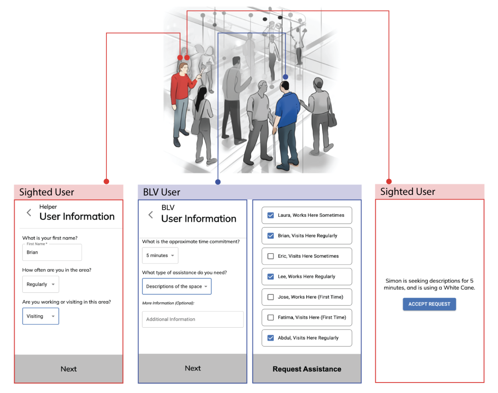

Exploring the Design Space of Assistive Technologies to Support Face-to-Face Help Between Blind and Sighted Strangers
Blind and low-vision (BLV) people face many challenges when venturing into public environments, often wishing it were easier to get help from people nearby. Ironically, while many sighted individuals are willing to help, such interactions are infrequent. Asking for help is socially awkward for BLV people, and sighted people lack experience in helping BLV people. Through a mixed-ability researchthrough-design process, we explore four diverse approaches toward how assistive technology can serve as help supporters that collaborate with both BLV and sighted parties throughout the help process. These approaches span two phases: the connection phase (finding someone to help) and the collaboration phase (facilitating help after finding someone). Our findings from a 20-participant mixed-ability study reveal how help supporters can best facilitate connection, which types of information they should present during both phases, and more. We discuss design implications for future approaches to support face-to-face help.

@inproceedings{teng2024help,
title={Help Supporters: Exploring the Design Space of Assistive Technologies to Support Face-to-Face Help Between Blind and Sighted Strangers},
author={Yuanyang Teng and Connor Courtien and David Rios and Yves Tseng and Jacqueline Gibson and Maryam Aziz and Avery Reyna and Rajan Vaish and Brian Smith},
booktitle={Proceedings of the CHI Conference on Human Factors in Computing Systems},
series={CHI '24},
year={2024},
pages={1--24},
address={Honolulu, HI, USA},
publisher={ACM},
doi={10.1145/3613904.3642816},
url={https://doi.org/10.1145/3613904.3642816},
eprint={2403.08221},
archivePrefix={arXiv},
primaryClass={cs.HC},
}